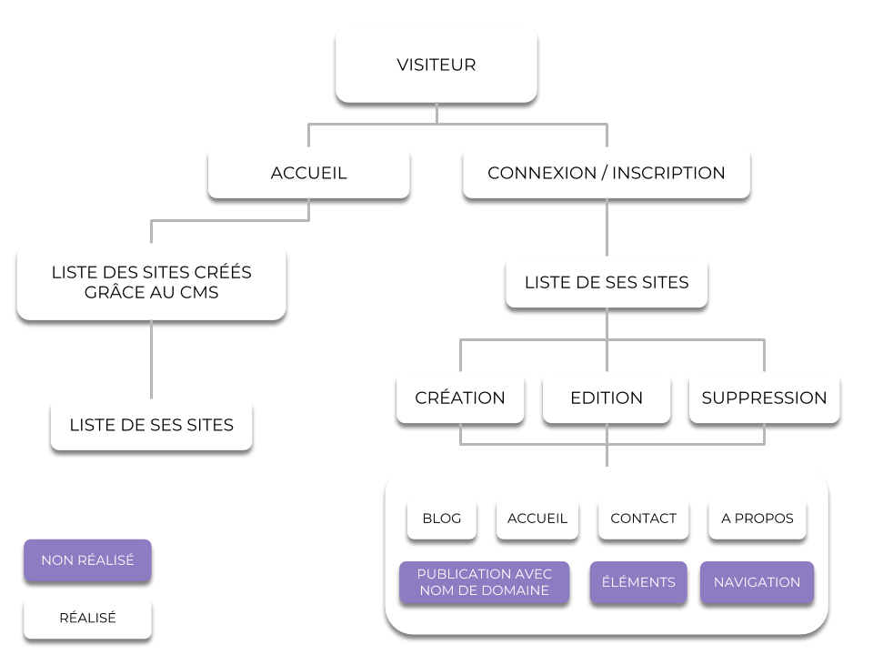

Schéma technique de l'application
Explication de mes choix de modélisation BDD
Pour le choix de la base de données j'ai choisis de m'appuyer sur Realtime Database, qui est un service de BDD proposé par Google. Ce dernier met à disposition une API permettant dans d'effectuer mes requêtes CRUD dans un service d'Angular. Sur cette BDD NoSql j'ai donc deux principaux axes : Users et Sites. Les Users (disposant tous d'un UID), sont directement liés à leur sites via une référence de document. Pour faire simple : L'axe Users est une collection, chaque User correspond à un document où toute leurs informations sont enregistré dans ce dernier. Pour lier les Users à leurs Sites, chaque User ont donc une référence dans la collection de Sites ce qui attribut à la création d'un site, l'UID du User dans le document Site. Ainsi, grâce à des Guards côté Front et des règles de BDD .json, un utilisateur ne peux pas modifier le site d'un autre utilisateur.

Explication de mes choix technologiques
Pour cette application, j'ai fais le choix de me baser sur Angular, NodeJs (via Cloud Functions), et surtout sur l'élaboration d'une PWA (Progressive Web APP). Pourquoi Angular ? Car, aujourd'hui, Angular est, je pense, le meilleur framework JS. Il est à la fois très complet et très bien organisé, il permet l'élaboration d'application très rapidement. Pourquoi NodeJs ? Le language JS est celui que je maitrise le mieux, c'est par avec logique que j'ai choisis ce dernier pour réaliser mes différents Trigger côté BackEnd. Enfin, la progressive web app permet de réaliser une web application (comme son nom l'indique) mais en ajouter le meilleur des applications natives : disponible hors connexion, envoi de notifications et accès aux divers composant du client.

Retour d'expérience
Pour cette application, j'ai donc pris le temps de maitriser différentes technologies. Cela m'a beaucoup apporté dans mon travail tout le jours, notamment dans l'organisation du code. Même si encore aujourd'hui, tout n'est pas parfait, je suis maintenant convaincu personnelement que les technologies que j'ai choisis pour ce projet, sont des technologies d'avenir. Malheureusement je n'ai pas réussis à intégrer une fonctionnalité qui me portait à coeur : la génération de sous-domaine à la volée. Pour cela je sais par quelle moyen y parvenir mais je ne sais pas encore le réaliser (une petite formation Docker et Kubernetes sera nécessaire). Pour conclure, ce projet m'a beaucoup apporté à la fois dans la gestion de projet personnel mais aussi dans la réalisation d'application et la gestion de plusieurs pôle applicative (DevOps, Backend, Frontend etc...).